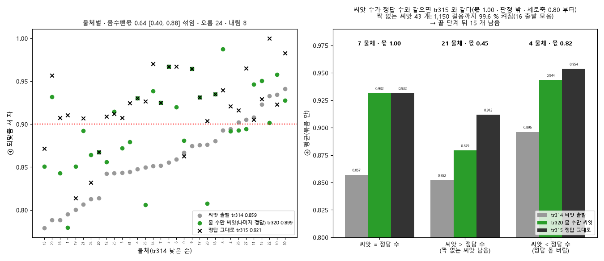

실험 m2_tr0320_h073_몸수만씨앗
목표 G1.2 view 모음 → 파츠별 CAD code(CadQuery · 그 전 「3 면도 → 파츠별 CAD」 · 지금 M2 는 위 · 앞 · 옆 고정 세 장만 받음 → 아무 각도 N 장으로 바꿀 것 · 11-20) · G1 첫 제품 — 피규어 · 메카 사진 여러 장 + 치수 → 숨은선 3 면도 + 파츠별 CAD · G0 임의의 이미지 → CAD 코드 · 빌린 가정 5: 정사영 · 시점앎 · 흰바탕 · 렌더화풍 · 정답3D · 갚는 계획: 진단 · 정답 만들기 — 껍데기를 그릴 어휘가 정해지면 그 어휘로 CAD code 정답 변환(m2 학습 · 비교는 그 뒤 카드) · 목표 시험지 값: 안 잼 (!)
tr315 의 ④ 오름은 몸 수 없이도 나오나 — 몸 수만 지금 씨앗 그대로 두고 자리 · 종류 · 크기 · 축을 정답으로 주면 오름의 몇 할을 되찾나?
| 가설 | 주장 | 결과 | 근거 |
|---|---|---|---|
| m2-H73 | tr315 오름은 몸 수 없이도 나온다 — 몸 수만 지금 씨앗이고 나머지가 정답이면 tr315 오름의 70 % 이상을 되찾는다 | 보류 | S6 합성 정답 32 · 몸 수만 지금 씨앗 · 짝 지은 씨앗 자리에 정답 뺌 몸 그대로 ④ 되맞춤 새 자 평균 0.8987(tr314 0.8588 · tr315 0.9214) · 몸수뺀몫 0.6379(지지 0.7 · 기각 0.3 사이 → 섞임) · 몫 구간 [0.3954, 0.8753] · 넷차 +0.04 구간 [0.0231, 0.0555] · 오름 24 · 내림 8 · 물체별 차 중앙값 +0.0512 · 0.9 넘은 물체 16/32(tr314 7 · 새로 넘음 3 · 4 · 6 · 7 · 8 · 9 · 14 · 17 · 18 · 25 · 29 · 떨어짐 26 · 27) · 가장 큰 오름 29 +0.1436 · 3 +0.1117 · 8 +0.0946 · 가장 큰 내림 28 −0.0686 · 23 −0.0434 · 22 −0.031 · 최소 0.7795(물체 1) · tr315 보다 높은 물체 8 · 뺌 찾음 70/93(tr314 28 · tr315 74) · 남은 뺌 몸 평균 2.97(tr314 2.41 · tr315 2.5 · 두 판 넷.json) · 하네스 실패 0 · CAD 안 끝남 0 · 조용한 실패 0 · 판 폴더 0.07 GB · 끝 단계 26.4 분(11:44:31 → 12:10:53 · 내내 tr322 GPU 단계와 겹침 · tr314 23 분) · 판정 밖(결과 뒤 셈 · 넷 세 개 · 자취 json · traj320.py): 씨앗 수 = 정답 수 7 물체(3 · 4 · 7 · 9 · 17 · 18 · 20) 몫 0.999(tr320 0.9315 · tr315 0.9316) · 씨앗 > 정답 21 물체 몫 0.453(0.8793 대 0.9119) · 씨앗 < 정답 4 물체(8 · 11 · 14 · 22) 몫 0.822(0.9435 대 0.9537) · 짝 지은 정답 몸 85 · 짝 없는 씨앗 43 · 버린 정답 몸 8 · 있 · 뺌 둘 다 0.5 넘은 몫 부드러운 단계 걸음 0 · 600 · 1150 에서 짝 정답 몸 1.0 · 1.0 · 0.999 · 짝 없는 씨앗 1.0 · 1.0 · 0.996 · tr315 정답 몸 1.0 · 1.0 · 0.999(자취는 1,150 걸음까지 · 16 출발 모음) · 끝칸(고른 출발 · R7 · 가지치기 뒤) 켜진 뺌으로 남은 것 짝 없는 씨앗 15/43 · 짝 정답 몸 75/85 · 씨앗 = 정답 7 물체는 칸 순서만 다른 같은 정답 몸 출발(점수 차 ≤ 0.0002) · tr315 대비 못 되찾은 차 합 0.726 중 21 물체 묶음 몫 0.943(약 94 %) · 묶음은 정답 몸 수와 같이 갈려 물체 꼴과 섞임 |
결정 표(돌리기 전에 정함)
- 만약 지지
다음 몸 수는 주된 원인 아님 — 나머지 넷 중 무엇이 함께 필요한지(A2 · A3 결과와 같이) - 만약 기각
다음 몸 수(남는 씨앗 · 빠진 몸)가 오름에 필요 — A4 몸 수만 결과와 같이 보고 몸 수 고르기 카드 - 만약 약함
다음 섞임 — 숫자 그대로 적고 사용자와 고름
분석
한 줄로
물음: tr315 에서 뺌 몸을 정답 그대로 출발시키자 관문 ④ 가 0.8588 → 0.9214 로 올랐다. 그 오름은 몸 수를 맞히지 않아도 나오나? 몸 수만 지금 씨앗 그대로 두고 자리 · 종류 · 크기 · 축을 정답으로 주면 오름의 몇 할을 되찾나?
답: 오름의 64 % 를 되찾았다(몸수뺀몫 0.64 · 구간 [0.40, 0.88]). 평균은 0.8987 이다. 몫 0.64 가 기각 선(0.3)과 지지 선(0.7) 사이라 판정은 섞임이고, 카드에는 보류로 적는다. 구간은 기각 선 밖이고 지지 선에 걸친다. 결과 전에 적은 예측은 지지였다. 판정 밖으로 나눠 보면 갈림이 뚜렷하다. 씨앗 수가 정답 수와 같은 7 물체는 오름을 다 되찾았다(몫 1.00). 씨앗이 정답보다 많은 21 물체는 45 % 만 되찾았다. 짝 없는 씨앗 몸은 부드러운 단계 동안 거의 다 켜져 있었고, 끝 단계 뒤에도 43 개 중 15 개가 남았다.
왜 이 실험을 했나
우리 목표는 메시를 부품 CAD 코드로 바꾸는 것이다. 이 판들은 그 정답을 만드는 변환이 얼마나 충실한지 본다. tr316 ~ 318 에서 뺌 몸의 자리 · 종류 · 크기를 하나씩 정답으로 줬지만 셋 다 혼자서는 오르지 않았다. 그래서 사용자가 「A, B 둘 다」 를 골랐다. 이 판은 A 넷 가운데 첫째(A1)다. 몸 수 하나만 빼고 나머지를 모두 정답으로 주면, 몸 수가 오름에 얼마나 몫을 하는지 거꾸로 알 수 있다.
낱말 몇 개를 먼저 풀어 둔다.
- ④ 는 본 판 전에 거치는 관문이다. 뺌 어휘로 직접 만든 합성 정답 32 개(물체 0 ~ 31)를 같은 맞춤으로 다시 맞춰(되맞춤) 정답을 되찾는지 본다.
- 뺌 몸 은 더한 몸에서 파내는 몸이다. 씨앗 은 입력에서 파인 점을 k-평균으로 네 덩이로 나눠 뺌 몸을 처음 놓는 자리다. 지금 씨앗은 모든 물체에서 넷이다. 정답 뺌 몸은 물체마다 1 ~ 8 개(합 93)다.
- 몸마다 있(켜짐)과 뺌(빼는 몸으로 쓰임) 값이 0 ~ 1 로 있다. 둘 다 0.5 를 넘으면 켜진 뺌 몸이다.
- 끝 단계 는 고른 출발을 다듬는 단계다. 입력 점수가 오르면 몸을 끄거나 뒤집고(R7), 점수를 거의 안 바꾸는 몸은 지운다(가지치기).
- 맞춤은 물체마다 출발점 16 개에서 따로 돌고, 입력만 보는 점수로 하나를 고른다. 앞 1,200 걸음이 부드러운 단계 다.
바꾼 것 하나
씨앗 넷과 정답 뺌 몸을 가운데 거리로 짝지었다(헝가리 짝). 짝 지은 씨앗 자리에는 정답 뺌 몸을 그대로 놓았다. 자리 · 종류 · 크기 · 축이 모두 정답이다. 짝 없는 씨앗은 지금 씨앗 꼴 그대로 두고, 짝 없는 정답 몸은 버렸다. 그래서 몸 수는 씨앗 수(넷)를 따른다. 짝 지은 정답 몸은 85 개, 짝 없는 씨앗은 43 개, 버린 정답 몸은 8 개다. 나머지는 tr314 와 같다.
결과

왼쪽 그림의 가로축은 tr314 점수가 낮은 물체부터 늘어놓은 순서다. 초록(이 판)은 대부분 회색(tr314) 위에 있고, 여럿은 검은 ×(tr315)와 겹친다. 오른쪽은 물체를 씨앗 수와 정답 수의 관계로 셋으로 나눈 평균이다(판정 밖). 왼쪽 묶음은 초록과 검정 막대가 같은 높이이고, 가운데 묶음은 초록이 둘 사이에 머문다.
| 몸수만씨앗(이 실험) | 씨앗 출발(tr314) | 정답 그대로(tr315) | |
|---|---|---|---|
| 되맞춤 새 자 평균 | 0.8987 | 0.8588 | 0.9214 |
| 되찾은 몫 | 0.64 [0.40, 0.88] | 0 | 1 |
| 0.9 넘은 물체 | 16/32 | 7/32 | 27/32 |
| 뺌 자리 찾음 | 70/93 | 28/93 | 74/93 |
| 끝에 남은 뺌 몸(물체 평균) | 2.97 | 2.41 | 2.5 |
| 하네스 실패 · CAD 안 끝남 | 0 · 0 | 0 · 0 | 0 · 0 |
새 자는 정답 메시와 맞춘 메시의 표면 점이 서로 0.02 안에 드는 정도를 F 점수(0 ~ 1)로 잰 값이다. 거리 단위는 정답을 둘러싼 상자의 가장 긴 변을 1 로 둔 것이다. 되찾은 몫은 (이 판 − tr314) ÷ (tr315 − tr314) 다. 대괄호는 물체를 짝지어 다시 뽑은(부트스트랩 2,000 번) 95 % 구간이다.
왜 이렇게 나왔나
확인한 것
- 짝 차(같은 물체끼리 뺀 차의 평균)는 +0.040, 구간은 [0.023, 0.056] 이다. 오름 24 · 내림 8, 물체별 차 중앙값 +0.051 이다. 0.9 를 새로 넘은 물체는 11 개(3 · 4 · 6 · 7 · 8 · 9 · 14 · 17 · 18 · 25 · 29), 떨어진 물체는 26 · 27 이다.
- 씨앗 수 = 정답 수인 7 물체(3 · 4 · 7 · 9 · 17 · 18 · 20): 몫 1.00 이다(이 판 0.9315 · tr315 0.9316). 이 물체들은 버린 몸도 남는 씨앗도 없어 tr315 와 같은 정답 몸 넷으로 출발한다(칸 순서만 다름 · 물체별 점수 차 ≤ 0.0002).
- 씨앗 > 정답 수인 21 물체: 몫 0.45 다(0.8793 대 0.9119).
- 씨앗 < 정답 수인 4 물체(8 · 11 · 14 · 22): 몫 0.82 다(0.9435 대 0.9537).
- 자취(16 출발 모음 · 부드러운 단계 50 걸음마다 1,150 걸음까지 · 판정 밖): 짝 없는 씨앗 43 개가 켜진 뺌으로 남은 몫은 걸음 0 · 600 · 1,150 에서 1.0 · 1.0 · 0.996 이다. 짝 지은 정답 몸은 1.0 · 1.0 · 0.999 다.
- 끝 단계 뒤(고른 출발의 끝칸 · 판정 밖): 짝 없는 씨앗은 15/43 이, 짝 지은 정답 몸은 75/85 가 켜진 뺌으로 남았다. 28 개는 끝 단계에서 지워졌다.
짐작 (아직 확인 안 함)
- 21 물체 묶음의 손해는 끝까지 남은 씨앗 몸 15 개 때문일 수도 있고, 남는 몸이 부드러운 단계 동안 다른 몸을 끌고 간 때문일 수도 있다. 둘은 재지 않았다.
- 못 되찾은 몫의 약 94 % 가 21 물체 묶음에서 나온다. 그래서 몸 수가 막힌 자리의 큰 몫으로 읽힌다. 다만 묶음은 정답 몸 수로 갈려(많음 묶음은 정답이 1 ~ 3 개인 물체) 물체 꼴과 섞여 있으니, 몸 수가 원인이라는 것은 아직 짐작이다.
한계
- 정답에서 자리 · 종류 · 크기 · 축을 빌린 진단이다. 실제 물체에 그대로 쓸 수 없다.
- 짝을 고를 때 정답 가운데를 썼다.
- 묶음별 몫(1.00 · 0.45 · 0.82) · 자취 · 끝칸 셈은 판정 밖이고 결과 뒤에 셌다. 묶음 크기가 7 · 21 · 4 라 구간은 재지 않았다.
- 묶음은 정답 몸 수로 갈리므로 물체 꼴과 섞여 있다.
- 오른쪽 그림의 세로축은 0.80 부터라 막대 차가 커 보인다.
- 한 번만 돌렸다. tr314 를 지금 코드로 다시 돌리지 않아 흔들림 크기는 재지 않았다.
- 끝 단계는 26.4 분 걸렸다(tr314 23 분). 내내 tr322 GPU 단계와 겹쳤고 CAD 안 끝남은 0 이다.
배운 것과 다음
몸 수만 씨앗으로 두면 오름의 64 % 를 되찾는다. 씨앗 수가 맞는 물체는 다 되찾고, 씨앗이 남는 물체는 절반도 못 되찾는다.
- 몸 수가 막힌 자리의 큰 몫으로 보인다(짐작 · 묶음 분해가 물체 꼴과 섞임). 남는 씨앗 몸은 부드러운 단계 동안 안 꺼지고, 끝 단계에서 일부(28/43)만 지워진다(잼).
- 남는 뺌 몸을 부드러운 단계 안에서 끄는 힘을 재는 판, 또는 씨앗 수를 입력에서 정하는 판이 후보다. 이것은 내 제안이다. 카드 결정표대로 다음은 사용자와 고른다(A 네 판 결과를 다 본 뒤 감시 세션이 묻는다).
- 바탕은 지금 맞춤 코드 그대로 둔다.
검토 (11-27 맥락 없는 서브 에이전트 · 보고 · 카드 · 잼 · 넷 세 개 · 결과_pc.png · 판정319 · 316 · traj320 · 그림320 · 껍데기313 · 자취 · 끝칸 npz 만 봄)
- 숫자는 모두 다시 센 값과 같음(평균 · 짝 차 · 오름 내림 · 중앙값 · 0.9 넘음 번호 · 묶음 번호 · 85 · 43 · 8 · 묶음 몫 · 몫 구간). traj320.py 셈 버그 없음(칸 번호 · 씨앗 캐시 · 짝).
- 가장 큼: 「남는 씨앗 몸이 꺼지지 않았다 · 못 끈다」 는 잰 것보다 셈 — 끝칸(고른 출발 · R7 · 가지치기 뒤)에 짝 없는 씨앗 15/43 · 짝 정답 몸 75/85 · 99.6 % 는 부드러운 단계(1,150 걸음까지 · 16 출발 모음)만. 2.97 을 「안 꺼진 근거」 로 이은 것도 틀림.
- 「출발이 tr315 와 같다」 는 칸 순서가 다름(점수 차 ≤ 0.0002).
- 판정 까닭: 섞임은 점 몫이 0.3 · 0.7 사이라서 · 구간은 기각 선 밖 · 다음은 카드 결정표대로 사용자와 고름.
- 묶음은 정답 몸 수와 같이 가 물체 꼴과 섞임 · 그림 세로축 0.80 · 끝 단계(R7 · 가지치기) 풀이 없음.
고친 줄 (검토 반영)
- 제 실수: 부드러운 단계 자취만 보고 「남는 몸을 못 끈다」 고 썼다. 끝칸을 내가 다시 셈(짝 없는 씨앗 15/43 · 짝 정답 몸 75/85) → 한 줄로 답 · 확인한 것 · 짐작 · 배운 것 굵은 문장과 1 · 2 고침 · 그림 오른쪽 제목 · 카드 막힌칸 · 노트 · 감시 세션에 바로잡음을 보냄.
- 출발 같음 → 칸 순서만 다름 · 판정 까닭 · 다음은 사용자와(카드 결정표).
- 한계에 묶음과 물체 꼴 섞임 · 세로축 0.80 · 끝 단계 낱말 풀이.